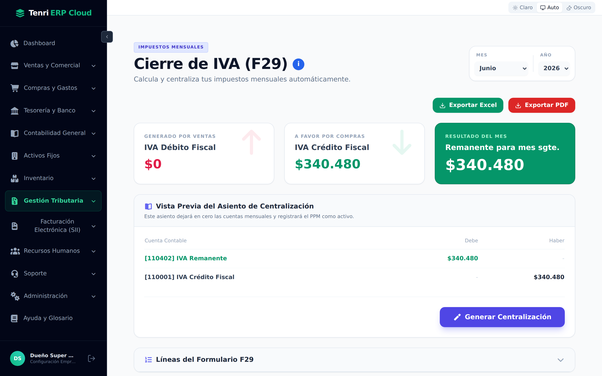
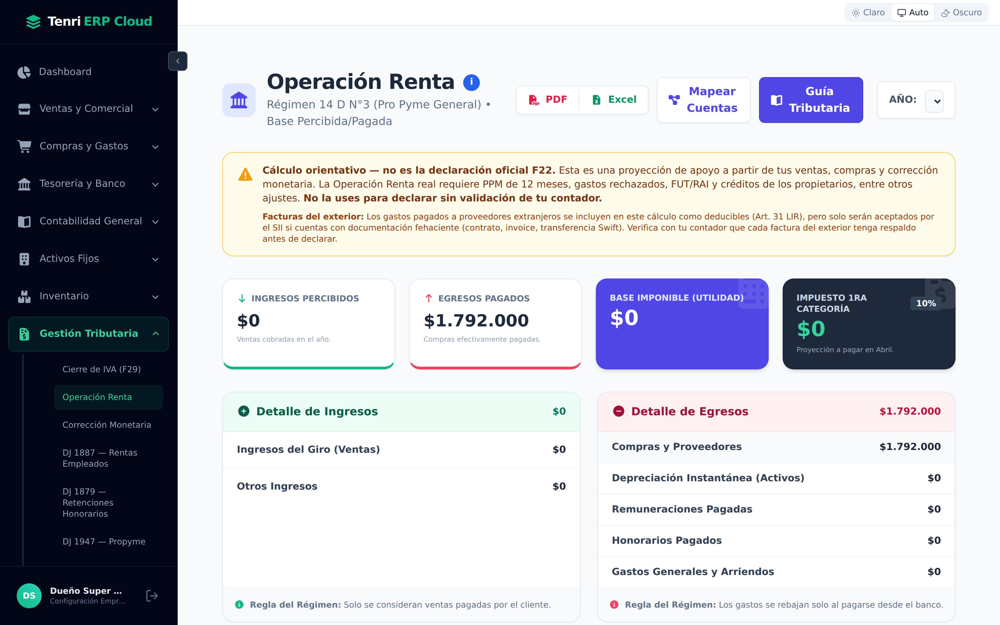
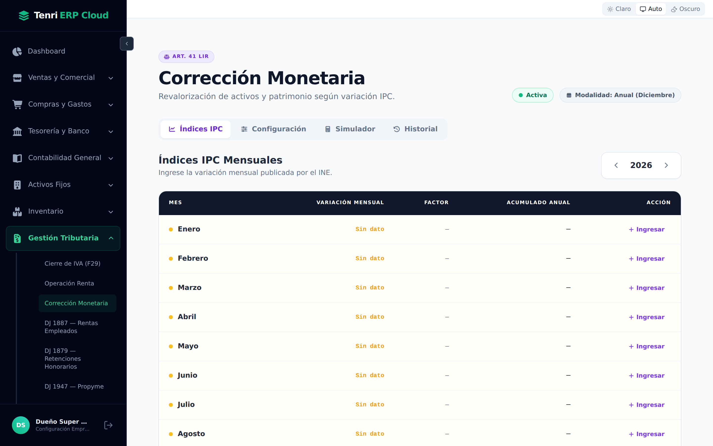
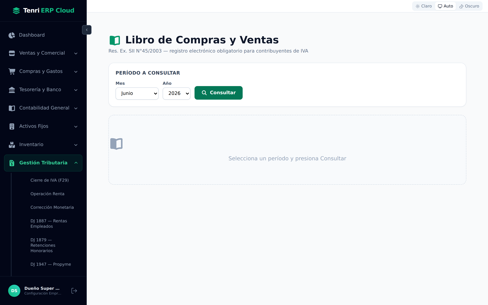
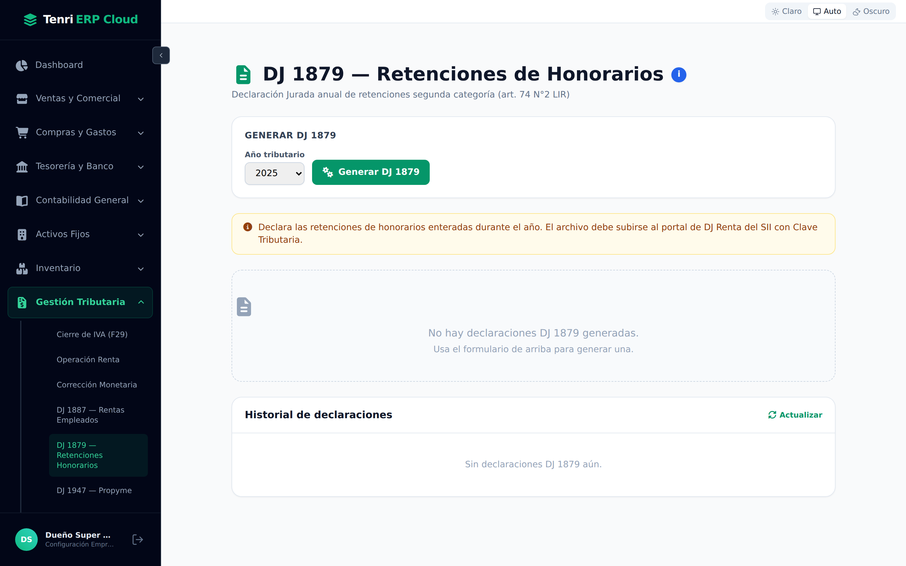

Del IVA mensual a la renta anual: el módulo que calcula el F29, prepara las Declaraciones Juradas y arma el Libro de Compras y Ventas, listo para el SII.

Todo lo que se declara al SII, en un solo lugar.
Este módulo toma la contabilidad que ya generó el sistema y la transforma en los reportes y declaraciones que exige el Servicio de Impuestos Internos. Sus pantallas se agrupan así:
| Bloque | Pantallas |
|---|---|
| IVA mensual | Cierre de IVA (F29). |
| Renta anual | Operación Renta, Corrección Monetaria. |
| Declaraciones Juradas | DJ 1887, 1879, 1947, 1835, 1837 y 1926. |
| Libros | Libro de Compras y Ventas. |
El impuesto mensual, calculado automáticamente.
Elija el mes y el año arriba a la derecha. El sistema calcula, a partir de sus ventas y compras del período:
| Concepto | De dónde sale |
|---|---|
| IVA Débito Fiscal | El IVA generado por sus ventas del mes. |
| IVA Crédito Fiscal | El IVA soportado en sus compras del mes. |
| Resultado del mes | La diferencia: IVA a pagar o remanente para el mes siguiente. |
La Vista Previa del Asiento de Centralización muestra el asiento que dejará en cero las cuentas mensuales de IVA; con Generar Centralización se contabiliza. También puede Exportar el F29 a Excel o PDF.
La preparación del impuesto anual a la renta.
Operación Renta consolida todo el año comercial en el pre‑cálculo del Formulario 22: toma los ingresos y egresos del ejercicio, aplica el régimen tributario de la empresa (14 A, 14 D, Propyme) y determina la base imponible y el impuesto de primera categoría. Muestra el detalle de ingresos y egresos y permite exportar el papel de trabajo a PDF o Excel.

La Corrección Monetaria (Art. 41 LIR) revaloriza activos y patrimonio según la variación del IPC. En la pestaña Índices IPC se ingresa la variación mensual publicada por el INE; el sistema calcula los factores y aplica el ajuste. Las pestañas Configuración, Simulador e Historial permiten parametrizar, probar y revisar cada corrección.

El registro electrónico obligatorio de IVA (Res. Ex. SII N°45/2003).
El Libro de Compras y Ventas (LCV) reúne todos los documentos tributarios del período. Elija el mes y el año y presione Consultar. El resultado se divide en dos pestañas:
Cada libro se puede descargar en CSV o Excel para respaldo o para el portal del SII.

Seis declaraciones anuales, con el mismo flujo de trabajo.
Las Declaraciones Juradas (DJ) informan al SII distintos hechos del año. Todas comparten la misma mecánica: elija el año tributario, presione Generar DJ, revise el resultado y descargue el archivo para subirlo al portal de Declaraciones Juradas del SII. El Historial de declaraciones guarda cada generación.

Estas son las Declaraciones Juradas disponibles y qué informa cada una:
| DJ | Qué declara |
|---|---|
| DJ 1887 | Rentas y retenciones de los trabajadores (sueldos, art. 42 N°1 LIR). |
| DJ 1879 | Retenciones sobre honorarios de segunda categoría (art. 74 N°2 LIR). |
| DJ 1947 | Rentas atribuidas a los propietarios en régimen Propyme Transparente (14 D N°8). |
| DJ 1837 | Honorarios pagados sin retención durante el año. |
| DJ 1835 | Retenciones a servicios prestados desde el exterior (art. 59 LIR). |
| DJ 1926 | Gastos rechazados y no deducibles (art. 33 N°1 LIR). |
Tenri ERP Cloud arma cada formulario y archivo a partir de su contabilidad, pero no presenta las declaraciones por usted. El paso final —subir el F29, la Renta o cada DJ— se realiza en el portal del SII con su Clave Tributaria. Así mantiene el control y la responsabilidad de la presentación.
Gestión Tributaria convierte su contabilidad en las obligaciones del SII: IVA mensual, renta anual, declaraciones juradas y el libro de compras y ventas.
El F29 se calcula solo, con su asiento de centralización y exportación.
Pre‑cálculo del F22 y corrección monetaria por IPC.
Seis DJ y el Libro de Compras y Ventas, listos para el SII.